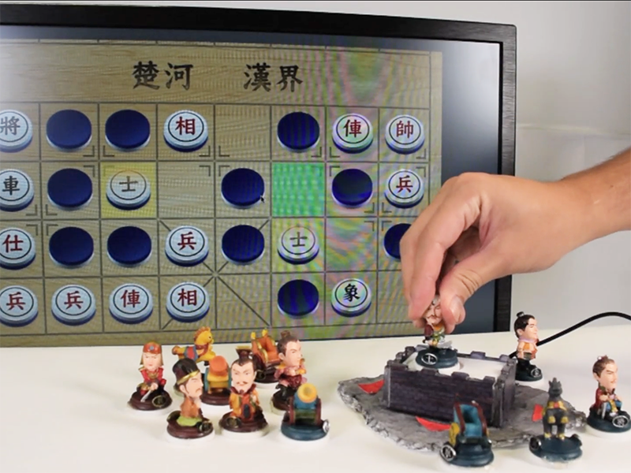

Lynda Lin (Lin Yung-Ta)
GAUSSCHESS
GAUSSCHESS
Part of the application of CHI 2016 Paper "GaussRFID"
林湧達、楊順堯、王威憲、開政傑、胡峻誠、范緯隆
GaussHackthon 2015.
Responsibilty: 帶領團隊, Processing
利用GaussRFID技術，磁力感應陣列(Matrix of Hall Sensor)能感知帶有磁鐵的棋子轉動角度與提起放下的動作，再藉由RFID辨認不同棋子的身份，設計了全新的暗棋玩法。
30 s Clip of GaussRFID

Teaser